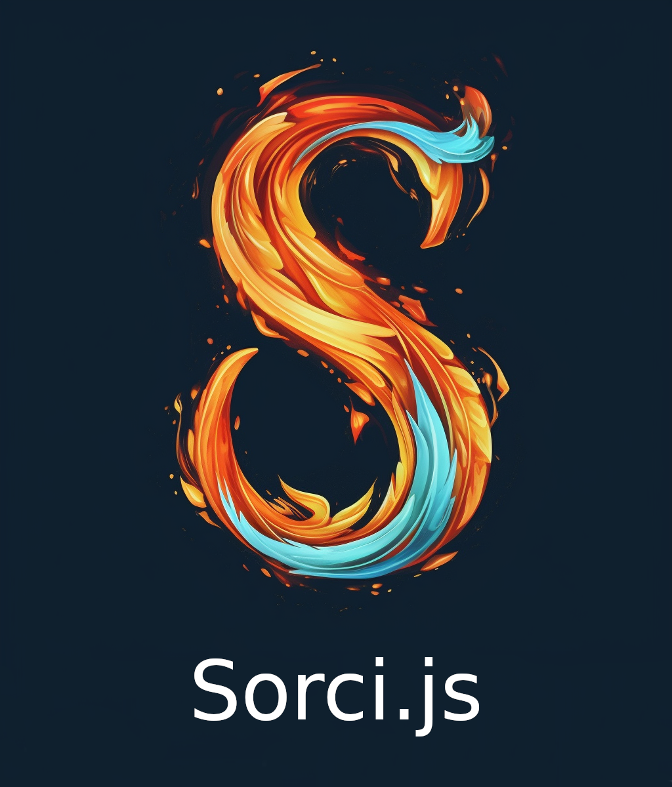
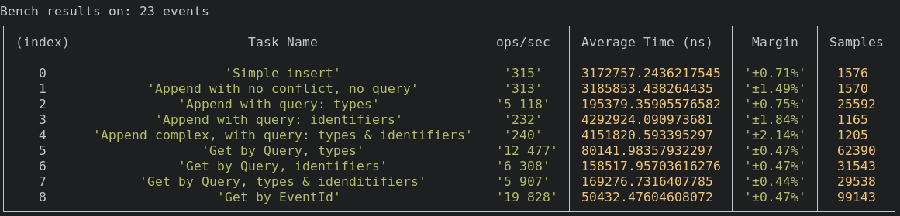
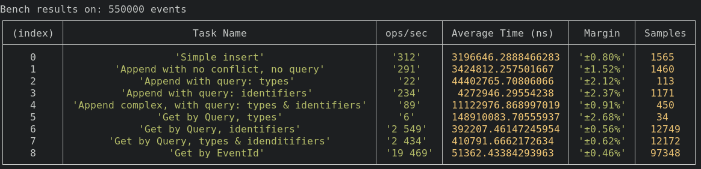

This is an implementation attempt to Dynamic Consistency Boundary (DCB) with typescript & postgres. Described by Sara Pellegrini & Milan Savic : https://www.youtube.com/watch?v=0iP65Durhbs
npm install sorci --save
yarn add sorci
The idea was to be able to do DCB without the need of an event store. So for now there is only one implementation of Sorci => SorciPostgres. Maybe other implementation will be done later. This library has never been used in production yet. Use at your own risk :)
import { Sorci, SorciPostgres } from "sorci";
const sorci: Sorci = new SorciPostgres({
host: "localhost",
port: 54322,
user: "postgres",
password: "postgres",
databaseName: "postgres",
streamName: "Your-Stream-Name",
});
// This will create everything needed to persist the events properly
await sorci.createStream();
// Small exemple of adding an Event with no impact (No concurrency issue)
await sorci.appendEvent({
sourcingEvent: {
type: "todo-item-created",
data: {
todoItemId: "0a19448ba362",
text: "Create the Readme of Sorci.js",
},
identifier: {
todoItemId: "0a19448ba362",
},
},
});
// Small exemple of adding an Event with query
await sorci.appendEvent({
sourcingEvent: {
type: "todo-item-name-updated",
data: {
todoItemId: "0a19448ba362",
previousText: "Create the Readme of Sorci.js",
newText: "Improve the Readme of Sorci.js",
},
identifier: {
todoItemId: "0a19448ba362",
},
},
query: {
$where: {
type: "todo-item-created",
identifiers: {
todoItemId: "0a19448ba362",
},
}
},
lastKnownEventId: "48efa9d568d3",
});
You can create projections to have a read model of your events.
Note: The functions
createProjectionandsetEventReducingToProjectionare designed to be executed as part of a migration system. They modify the database schema and define triggers/functions, so they should only be run once (or when changes are needed), not at application startup.
// Create a projection
await sorci.createProjection({
name: "todo-list",
schema: {
id: { type: "text", primaryKey: true },
title: { type: "text" },
},
});
// Define how events update the projection
await sorci.setEventReducingToProjection({
name: "todo-list",
eventType: "todo-item-created",
reducer: (sql, tableName) => {
return sql`
INSERT INTO ${sql(tableName)} (id, title)
VALUES (
event.identifier->>'todoItemId',
event.data->>'text'
)
`;
},
});
await sorci.setEventReducingToProjection({
name: "todo-list",
eventType: "todo-item-name-updated",
refreshProjection: true, // <--- This will truncate the projection table and replay all events
reducer: (sql, tableName) => {
return sql`
UPDATE ${sql(tableName)}
SET title = event.data->>'newText'
WHERE id = event.identifier->>'todoItemId'
`;
},
});
When you create a new projection or update an existing one, you might want to process past events to populate the projection.
You can do this by setting the refreshProjection property to true in setEventReducingToProjection.
This will truncate the projection table and replay all events of the specified type to rebuild the state.
Optimization Tips:
- Batch Updates: If you are defining multiple reducers for the same projection within a single migration script, it is efficient to set
refreshProjection: trueonly on the lastsetEventReducingToProjectioncall. This avoids unnecessary multiple rebuilds of the same projection.- New Events: If you are introducing a new event type that hasn't been emitted yet, there is no need to refresh the projection, as there are no past events to replay.
// Query the projection
const results = await sorci.queryProjection("todo-list");
// Query with a where clause
const specificItem = await sorci.queryProjection("todo-list", {
where: { id: "0a19448ba362" }
});
You can also compute state on the fly using reducers.
import { getAggregateByQueryFactory } from "sorci";
const getAggregate = getAggregateByQueryFactory(
(query) => sorci.getEventsByQuery(query)
);
const query = {
$where: {
type: { $in: ["todo-item-created", "todo-item-name-updated"] }
}
};
const { state } = await getAggregate(query, (currentState, event) => {
// Your reduction logic here
return { ...currentState, ...event.data };
});
The library creates a single table to store events.
The library uses Postgres Advisory Locks (pg_advisory_xact_lock) to handle concurrency.
Instead of locking the whole table or a specific row, it locks a "concept" defined by your query.
When you append an event with a query (to check for consistency), the library:
This effectively creates a Dynamic Consistency Boundary.
todoItemId), one will wait for the other.Full References - here
Unit test are testing proper appending, specialy focus on concurrency issues.
yarn run test:unit
Since the table where the event are persisted is locked during write. My main concern was performance. So I did some benchmark to see how it perform.
Performance vary with volume of events in the stream. But for most application it should not be a problem.
Every benchmark is run for 5s with 23 events and 500 000~ events. Those benchmark are done on a dell xps pro, they also run in the CI.


~300 ops/s
This is for reference. To know the baseline of Insert.
~300 ops/s
This is when we want to persist an event that we know don't impact decision. The library will be very close to baseline. It's almost a simple insert.
Here we have a big variation, in the first exemple there is only 2 event of the selected type course-created, so getting the lastVersion is fast
In the second exemple we have 55 000 event of types course-created it take a bit longer to get the lastVersion
This should not be a big issue because filtering only by types should not happen very often. The option remain available if necessary
~230 ops/s
Here volume should not impact the persistence. Identifier has a gin index. Wich make retrieving event by id fast.
This is great because it will be one of the most use way of persisting event.
Here volume is impacting the results. But performance are for most cases acceptable. On a benchmark with 1M events the library still score a 50 ops/s
Here volume is important, in the second exemple we are retrieving 55 000 events whereas in the first we retrieve 2.
Here volume is important, In those exemple we retrieve the same amount of event but going through the btree index is a bit slower since there is more data.
Perfomance should be good for most cases
Here volume is important, In those exemple we retrieve the same amount of event but going through the btree & gin index is a bit slower since there is more data.
Perfomance should be good for most cases
~20 000 ops/s
This is for reference. To know the baseline Query.
Requirement: Docker installed
yarn run bench
It will take around 30s ~ to load the half a million event into the table.
I've be figthing aggregate for a while now. Sometimes it really feel like trying to fit a square into a circle. The approache of Sara Pellegrini & Milan Savic (DCB) solve the concurrency issue I had with an event only approach. There conference talk is really great and explain the concept so well that this implementation was possible I highly recommend it : https://www.youtube.com/watch?v=0iP65Durhbs
I'm really curious to get feedback on this one. Feel free to start/join a discussion, issues or Pull requests.